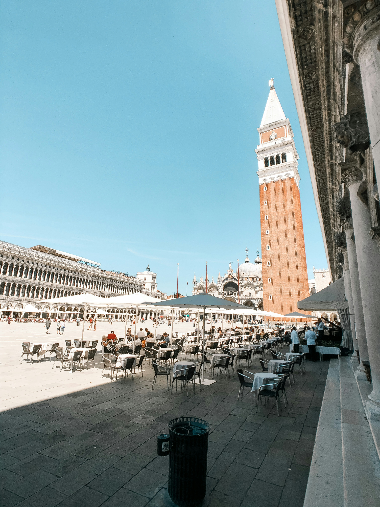
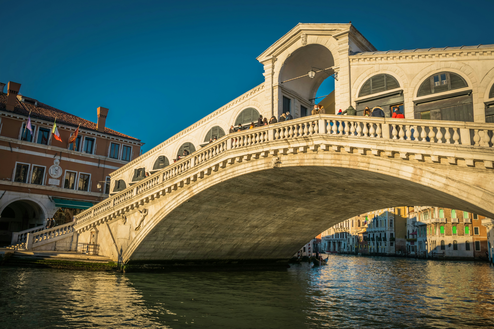
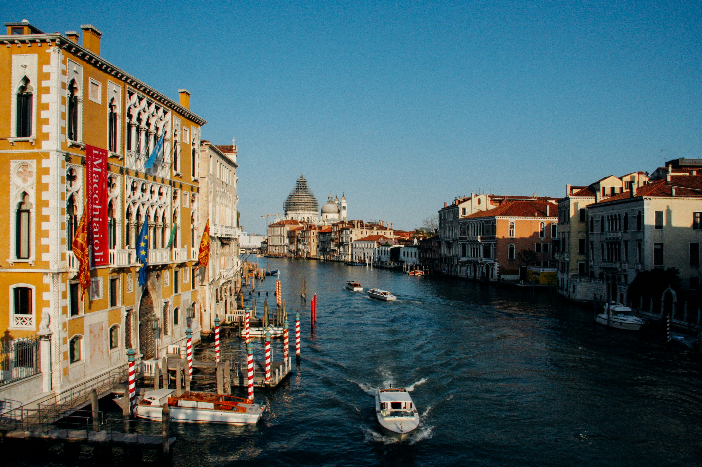

Venedik, İtalya’nın kuzeydoğusunda, Adriyatik Denizi kıyısında yer alan eşsiz bir şehirdir. Venedik, su kanalları, tarihi yapıları ve romantik atmosferi ile dünya çapında tanınır. Şehir, MÖ 5. yüzyılda barbar akınlarından kaçan Romalılar tarafından kuruldu. Bu dönemde, Venedik bir dizi küçük adacık üzerinde gelişmeye başladı ve zamanla önemli bir ticaret merkezi haline geldi.
Orta Çağ boyunca, Venedik Cumhuriyeti, Akdeniz ve Doğu Avrupa arasındaki ticaretin merkezi haline gelerek büyük bir deniz gücü oldu. Venedik’in stratejik konumu, şehrin zenginleşmesine ve siyasi olarak güçlenmesine yol açtı. Venedik Cumhuriyeti, 1000 yıldan fazla bir süre bağımsız bir devlet olarak varlığını sürdürdü ve "La Serenissima" (En Serene Cumhuriyet) olarak anıldı.
Venedik, Rönesans döneminde büyük bir kültürel ve sanatsal merkez haline geldi. Şehirde üretilen cam, dantel ve sanat eserleri, Avrupa’nın dört bir yanına ihraç edildi. Venedik’in ticaret zenginliği, şehrin mimari ve sanatsal açıdan gelişmesine de katkıda bulundu. Sanatçılar ve mimarlar, Venedik’i süslemek için birçok muhteşem yapı inşa etti.
Ancak, 1797'de Napolyon Bonapart’ın Venedik’i işgaliyle, Venedik Cumhuriyeti sona erdi. Şehir, daha sonra Avusturya İmparatorluğu'nun bir parçası haline geldi ve 1866'da İtalya Krallığı'na katıldı. Günümüzde Venedik, bir UNESCO Dünya Mirası alanı olarak korunmakta ve milyonlarca turist tarafından ziyaret edilmektedir.
Venedik, adeta bir açık hava müzesi gibidir ve ziyaretçilerine tarihi ve kültürel zenginliklerle dolu bir deneyim sunar. İşte Venedik'te mutlaka görülmesi gereken başlıca yerler:
San Marco Meydanı, Venedik’in en ünlü ve en büyük meydanıdır. Bu meydan, Venedik’in kalbinde yer alır ve şehrin en önemli yapılarından bazılarına ev sahipliği yapar. Meydanda oturup kahvenizi yudumlarken, tarihi yapıları ve canlı atmosferi gözlemleyebilirsiniz.

San Marco Meydanı’nda yer alan bu görkemli bazilika, Bizans mimarisinin en güzel örneklerinden biridir. İç mekan, altın mozaikler ve zengin süslemelerle kaplıdır. Bazilika, Venedik’in en kutsal yerlerinden biri olarak kabul edilir ve aynı zamanda şehrin sembollerinden biridir.
Venedik’in en eski ve en ünlü köprüsü olan Rialto Köprüsü, Büyük Kanal (Canal Grande) üzerindedir. Bu köprü, Venedik’in iki yakasını birleştirir ve etrafındaki pazar alanları ile ticaretin kalbinin attığı yerdir. Köprüden geçerken, Büyük Kanal’ın muhteşem manzarasını izleyebilirsiniz.

Büyük Kanal, Venedik’in ana su yolu olarak bilinir ve şehrin kalbinde kıvrılarak ilerler. Bu kanal boyunca birçok tarihi saray, kilise ve köprü sıralanır. Gondol veya vaporetto (su otobüsü) ile kanal boyunca bir tur yapmak, Venedik’in güzelliklerini keşfetmenin en güzel yollarından biridir.
